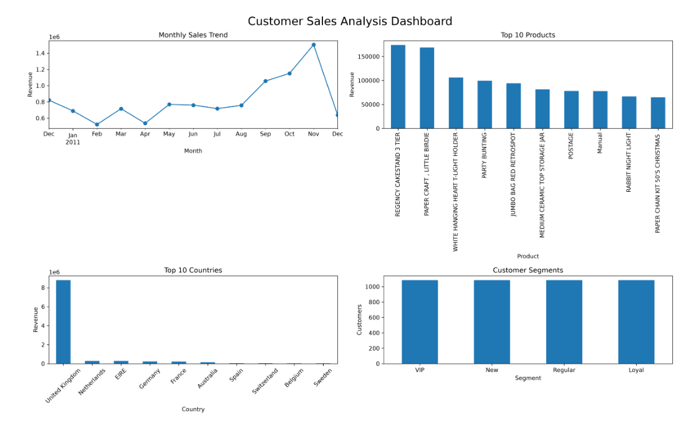

FEATURED PROJECT
Customer Sales Analysis & Segmentation
Python
Pandas
NumPy
Matplotlib
Analyzed more than 500,000 retail transactions to uncover purchasing behavior, identify revenue trends, and segment over 4,000 customers into actionable business groups.
- Cleaned and processed 500K+ retail records
- Performed exploratory data analysis
- Built customer segmentation model
- Created interactive business dashboards